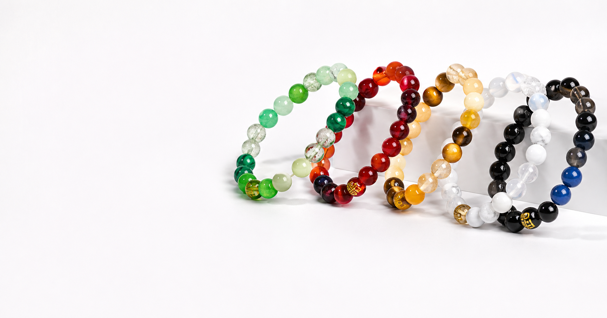

부족 기운

무료 사주 보고 맞춤 팔찌 추천
내 사주에 부족한 기운, 오행 팔찌로 매일 보완하세요
사주는 타고난 기운의 흐름을 보여줍니다. 부족한 목·화·토·금·수 기운을 확인하고, 나에게 맞는 색과 원석을 데일리 주얼리처럼 착용해 흐트러진 에너지를 정리해보세요.
무료 사주 보고 내 팔찌 찾기3분 입력
나의 오행 균형 확인
이름은 한자 후보를 고르거나 직접 입력할 수 있습니다. 결과는 저장되지 않고 브라우저에서 바로 계산됩니다.
개인 리포트
오행 균형 결과
풍수지리 추천
추천 장소
맞춤 행운팔찌
오행 보완 팔찌
일이 풀리는 하루 루틴
지금 결과에 맞는 오행 컬러로 선택하면 고민 시간이 줄어듭니다.
가볍지만 진지하게
무료 분석은 전통 명리학을 현대적으로 해석한 웰니스 콘텐츠입니다.
팔찌 구매까지 자연스럽게
부족 기운 진단 뒤 바로 맞는 오행 컬러와 원석을 제안합니다.
무료 배포 가능
Netlify, Vercel, GitHub Pages에 그대로 올릴 수 있습니다.